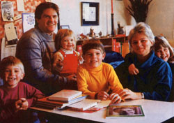
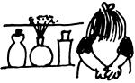
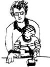
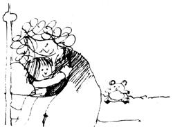

The Plowboy Interview
Conversation with the editors of Mothering magazine and the parent as a professional.
By the Mother Earth News editors
September/October 1985
Peggy and John McMahon:
The Parent as a Professional
`I don't think our society is doing a good job of raising people who are growing up to be very sane. Look at the rate of adult suicide, of teenage suicide, of mental illness, of divorce-of all the indications of people's unhappiness. Compare us to other societies-more primitive, perhaps, but with stresses of another kind-that raise emotionally stable human beings. I think that in order to save our civilization, we really have to look at how people become sane and happy. In a way, we have to redefine parenting. "
Peggy O'Mara McMahon, editor of Mothering magazine and speaker of the above words, is giving her full efforts to doing just that: redefining parenting. She and her husband, John, have made nurturing their family-which includes Lally (11), Finnie (9), Brant (7), and Nora (3) the primary goal in their lives.
How are they doing this? Well, they started out by birthing their children at home (when it was medically safe), because they felt that home is the best place for a family to experience the bonding aspects-emotional, psychological, and spiritual-of birth. In addition, Peggy has breast fed all four offspring, on their schedule, not hers, even though that entailed nursing siblings. Peggy has stayed home fulltime with the children . . . and as soon as it was financially possible, John worked at home and became a full-time father as well! Both parents chose to learn how to discipline their children with respect, rather than spankings. They decided to educate their offspring themselves. They agreed not to watch that great family distracter, television. And they've made all their family's health care decisions-even controversial ones, such as not immunizing any of their children-after much deliberate study and reflection.
Peggy's and John's careers are also intimately involved with improving families, for she is editor, he is general manager, and together they are owners of Mothering . . . a wonderful quarterly dedicated to learning how to parent in a loving and "conscious" way. Mothering magazine covers a wide range of parenting issues with a distinctively warm and caring hand. Those of you who want to learn more about the topics discussed in the following interview (as well as the many parenting topics we had to leave out of the following interview) will find that magazine the first and best place to look.
Last January, staff writer Pat Stone and photographer Steve Keull traveled to Santa Fe, New Mexico, to visit Mothering's first family and to learn about the "professional parenting" they advocate. Both MOTHER staffers had a grand time and greatly enjoyed the company of all six McMahons. They saw a family that works, plays, and loves together remarkably well. And they found their own concepts of what constitutes good parenting broadened and challenged. As Pat himself admits, "Studying Mothering and talking with Peggy and John have definitely had an effect on me as a parent: The most obvious influence is that I haven't spanked any of my own children since doing this interview. Some of what the couple says is still hard for me to take-I'm not ready to say no to immunizations, for instance-but the more I think over their ideas, the more they make plain and caring sense. "
You may find that what Peggy and John McMahon have to say-edited here from over four hours of recorded conversation-has the same effect on you.
PLOWBOY: Peggy, just what is your magazine? What does Mothering stand for?
PEGGY: I think it celebrates the art of mothering. Many people in our society have lost sight of the significance of raising the heirs of our civilization, of how crucial the early years of children's lives are. When I first became a mother, I felt like I had discovered a secret. Nobody had ever told me about the magnitude of the experience, how overwhelming it can be, and how unsure of yourself you feel at a time when so much is demanded of you.
Our magazine gives support and information to mothers and helps us all feel that what parents do is really important, not just drudgery.
PLOWBOY: Then you advocate full-time mothering?
PEGGY: That's a difficult question to answer. Yes, we do stand for full-time mothering. We want to support women who choose to be with their children-to help them feel that's valuable and worthy of their best efforts. I'm not against mothers who are working outside the home. I recognize the financial and social pressures women are under. But I think we have to look more carefully at the needs of a child and not rationalize those needs in order to meet our own. There's a real correlation between emotional and intellectual stability in an adult and the kind of early experiences that adult had. So I think it's worthwhile to sacrifice-if that's what it is-or realign your priorities in the early years of your children's lives so you can be present with them.
It's particularly important that a young child have one dependable caretaker: That first attachment is a kind of total devotion that sets the stage for all future attachments. And the best person to be the child's first caretaker is the mother, because that is the person who biologically grew the child and is equipped to feed him or her.
How long do children need full-time mothering? I've often heard, until they're three years old. When children are very young-it's really important to try to see things through their eyes-they have no concept of time, of past or future. So if their loved caretaker is not present, they enter a grieving stage; they don't know that that person will be back in two hours or whenever. When they get to be about three or so, they become more social beings and they're better able to understand time . . . to understand that if you go away, you'll come back.
PLOWBOY: Do working mothers just not care enough about their kids to stay home with them?
PEGGY: No, no. All mothers and fathers care deeply about their children. It's mostly a matter of ignorance. Because of the way we ourselves were raised, most of us don't understand the importance of a mother's presence in a child's early years. In our society, we have very few models for the best ways to raise children. If your offspring ends up in jail, people are quick to judge what you did wrong. But when a child does well, we seldom look back and pinpoint what was really helpful.
So I guess that's what this magazine is all about. It's trying to identify some things that work, that really do grow healthy human beings.
PLOWBOY: OK, you're raising four children. You edit a magazine that addresses these issues all the time. Tell me, how do you raise healthy human beings?
PEGGY: One of the most challenging ways is also the most basic: investing time in the parent-child relationship. Our society is structured in such a way that most of us go off every day, so it's difcult to spend time with people we love. Yet you can't rear your child best with only so-called quality time. I think the idea that you can give young children a limited amount of attention yet somehow make that care especially valuable is a fallacy. You can't all of a sudden decide that you're going to have quality time with somebody when you don't have quantities of time with that person. You have to spend a lot of time with your children-with anybody-in order to have a strong relationship.
If you do that and demonstrate unconditional love for your children, you will do a lot to help them grow up with a strong sense of selfesteem and wholeness.
PLOWBOY: What's unconditional love?
PEGGY: It's love that isn't dependent on what they do, that lets our children know that even if they do something we don't like, we still like and love them- that their behavior is separate from their beings.
PLOWBOY: How do you get that distinction across?
PEGGY: One of the ways is by using our eyes to focus on the other person, to say "I'm present with you." Sometimes we're in such a hurry that we only make eye contact with our children when we're really angry at them.
Some other ways include affectionate touching . . . getting down to their level and really talking with them . . . and disciplining them in a fair, respectful manner. Now, I don't have all the answers on parental discipline, but I do know that spanking is not one of the answers.
If you and I were in a relationship and we were having a fight and you did something I didn't like, it wouldn't be appropriate for me to whack you. If we were in a restaurant and you spilled your drink, I wouldn't slap you and tell you to leave the room. Applied to any other relationship, the things we do to kids are ludicrous. We wouldn't expect them to work. And there's no reason they'll work with a child, because a child is just a small human being-not a foreign creature. Children may not be sophisticated in resolving conflicts or using language, but they have just as much knowledge of their own needs and as much wisdom about themselves as we do.
Adults often assume that the child is this unmolded creature and that there are some things the child won't learn unless there's some real forceful molding done. But the real reasons we spank are that we were spanked ourselves, and that as parents we think we have to control situations that sometimes we just can't control. We feel shocked, even guilty-how could my child do this bizarre thing? So we get angry, lose our tempers, and spank.
But by doing so, we acquiesce to the belief that the only way to get one's way in a situation is through violence.
PLOWBOY: OK, how should parents discipline their children-just by telling them they've been bad?
PEGGY: I think that what we mean by discipline is just communication. Talk about what's happened in the conflict situation, help your children to understand their behavior, and, most important, speak from your feelings. There's a difference between saying "You dummy, why did you do that?" and saying "Boy, when you do that, I really get upset." If you speak from your feelings and clearly say what concerns you, most times your kids will pick right up on that, because they love you and want to please you. If they don't comply, it may be because you don't know all the dynamics of the situation-maybe when you listen to them, something they say will even change your mind. But when you're telling them to do something just because you said so or you call them stupid, there's not much respect for them in that, so they're not going to learn respect.
Children totally model what we do. The way we relate to them is the way they'll relate to their siblings and to other people. We can't expect to hit them, to yell at them, and then to say to them "Oh, but be nice to your brother," or "Don't hurt your brother." We can't be two-sided like that.
PLOWBOY: Why is there such a big difference between saying "You dummy, why did you do that?" and "I don't like it when you do that"?
PEGGY: I know that talking from your feelings sounds a bit awkward at first. But one of the sayings that came out of Parent Effectiveness Training-and P.E.T. was sort of the originator of this whole conceptis "labeling is disabling." Anytime you're accused of something, it immobilizes you. Attacking language closes off the dialogue. You can feel the difference in your gut when people assume you're to blame versus when they take responsibility for a situation by just talking about how it's affecting them.
Of course, this whole own-your-feelings thing can get exaggerated. You don't always have to say "I feel that. . ." You can just make a clear statement, like "We don't do that. We don't hit each other in this house." Having simple rules is clearer than turning your words into a personal attack and calling the other person bad.
PLOWBOY: Do you punish the child in other ways?
PEGGY: I don't think actually isolating kids or punishing them does any good. The main things they get from that are the ideas that they're bad and that there's always someone to blame. When you focus excessively on somebody being the bad guy, then that becomes part of that person's self-image and is detrimental to him or her in the future. It's also a real handicap to grow up thinking that whenever there's a wrong, there's a wrongdoer. Sometimes there's not.
PLOWBOY: I appreciate what you're saying, but sometimes talking does work better with adults than with children. No matter how often I tell my two-year-old that I don't like her biting her brother, my words have no effect!
PEGGY: At that age, you're right, words often won't do much. Your daughter doesn't have the memory development that you do-she doesn't even remember that biting is bad and that you told her that. So you just have to remove your child from the situation or address the problem by making sure there are two toys or whatever to play with. Little children act spontaneously-they aren't very sophisticated at resolving conflicts. Our job is to guide them and help them learn how to resolve a problem better the next time.
PLOWBOY: Did you ever spank your kids?
PEGGY: Yes, I did in the beginning. When Lally and Finnie were younger, I thought that spanking wasn't good but that sometimes I just lost my temper and that everybody does, so some spanking was OK. But then I saw John Valusek's bumper sticker: "People are not for hitting-and children are people, too." Those words made an impact on me. I began to realize that if I had spanking as my limit, then I would reach that limit. I also began to see that the spanking didn't stop the situation-the drama of my activity and the strength of my emotions did. So I just made a conscious decision not to spank. That's all there was to it.
After that, I found that I dealt with situations differently. I dealt with them sooner or by just trying to talk from my feelingswhich, again, sounds awkward but becomes much more accurate and real.
Oh, there were a few slipups. In the beginning, I still spanked sometimes. But that's all right, loo. I think that our parenting goals should be quite specific, but that we also have to be forgiving of and gentle with ourselves. It's like a circle. You can't try to be nice to your kids if you aren't nice to yourself.
I really feel kinship and love for women as mothers. So while I feel very strongly that there is a better way to parent, I also have a lot of sympathy for all of our struggles to achieve that.
PLOWBOY: Peggy, I see your husband's finished teaching the children, so I'd like to get him in on the discussion. John, we've been talking some about the importance of full-time mothering during a child's early years. For most families, achieving that goal means the father has to work full-time outside the home. But you two have gone a step beyond that-you both stay at home. Why and how did you two manage that? Are you advocates of full-time fathering, too?
JOHN: I think it's not enough to bring home the money. Fathers have to go way beyond that in terms of being part of the family. Doing your nine to five and putting up with all the job hassles so that everyone else can live at home and not work-that's just not enough to allow a family to survive. That's what all fathers are doing, and I think we all agree that something's wrong out there in the family unit, that we have to do something differently.
It goes back to what you want your life to be. If you feel you have to work that outside job to "become something," then you are choosing that over being with your family. You may say to yourself, I choose to work hard right now so that in 20 years we'll have lots of money and life will be easier; but, in fact, you are throwing away the now. You're throwing away the time right now, when your kids need you the most.
We didn't want that in our family. So we set out to create a situation that would allow Peg to be home 100% of the time and me as much as possible. In other words, we wanted to create a home business.
PLOWBOY: But you didn't create Mothering; you bought the magazine from its founders. Wasn't that really a stroke of good fortune?
PEGGY: You can always look at other people's lives and say, "Yeah, they can do that because they were fortunate." But I feel what happened in our lives-getting a magazine that could support us-was the result of our strong desire to have something happen; it was a process that took several years.
JOHN: We'd always had sidelines we were trying to develop into a family business. I'd done a little woodworking and furniture making. We'd sold Ashley stoves and Aladdin lamps for a while. We'd even considered forming our own school-we would teach other kids in order to earn a living but have our kids there so we could be close to them. We were always testing the waters.
PEGGY: Anyone can create a work-at-home situation if that's what the primary goal is. There are lots of ways to make money . . . particularly if you're willing to cut back or live more simply for a few years. I know women who run answering services. We have a friend who sells down comforters as a mail-order business. Another woman I know, a single mother with five children, wrote articles and did some counseling parttime. If you're a professional person-a doctor, lawyer, or whatever-you could have an office adjoining your home. Or you can come up with your own idea by just looking at the things out there that you want but can't get.
PLOWBOY: But people might be afraid that their home business won't make enough money to support them or that it'll end up taking more of their time than a regular outside job.
JOHN: Even if you do have to work hard at home, you'll be physically close to your family. Slaving away ten feet from your children is better than slaving away out at the rock piles. If a kid falls down, you can always stop, deal with that, and then go back to work. And if your work gets too hectic-which happens with us sometimes-you just have to stop and remind yourself that the reason you're doing this is so you can spend more time as a family. And create specific times in the day or week when you will do only family things-really make dates with everybody.
PEGGY: You can't make decisions in the present based on suppositions about the future. If your goal is to try to have a family business, then just do it. If it ends up taking too much time and earning too little money, then you stop and get another job. But don't let all these fears stop you from trying a business.
And it's not like you have to jump into it and risk everything. You can take steps toward that goal, work toward it in increments.
PLOWBOY: John, did your being at home really make a difference with your children?
JOHN: I think it just expanded our relationships. It really comes down to hours in a day. A doctor becomes a better doctor just by practicing more medicine. A lawyer gets better by having more cases and dealing with more legal situations. And you become a better father just by spending more time fathering.
My oldest son, Finnie, and I used to have a real rough relationship. He was always going a hundred miles an hour, and I hadn't figured out my fathering role yet-how I would deal with his energy or the ways that my own father tended to come out in me in my parenting. But when I stopped working for somebody else, I saw more of what he was doing, what drove him, and why he'd get mad and scream. He saw me more and learned what I liked and didn't like. So our relationship just got better and better.
PLOWBOY: What kind of support is there for a full-time father?
JOHN: Not much. It's really hard for fathers in general. We don't talk with each other about personal things as much as women do, so we're a little bit isolated. I think women have to take the lead in helping fathers get over their inexperience and get rid of all the baggage they carry around from their own fathers concerning what fathering is. Peg has really helped me a lot with that. She'll stop me when I'm doing something off-the-wall to the kids and say, "Why are you saying that? Listen to what you sound like!"
PEGGY: He's not always too glad to hear it at the time.
JOHN: Yeah, it goes over real big. Later on, it works out OK, though.
PLOWBOY: You two fight about parenting?
PEGGY: I don't believe in all this consistency-you know, the idea that you're never supposed to disagree in front of the children. Sometimes John wishes I did!
PLOWBOY: Peggy and John, you two run a business at home, homeschool your children, strive to both be full-time parents-don't you ever want to get away from it all . . . to "have your own space"?
JOHN: It's selfish to require your own space when your baby not only wants its own space, but wants you. Just say, "Let's focus on raising the children for right now, and do this for three years" . . . or for five or ten years if you have two or three children. You had 25 years or so before this when you did something else, and you'll have maybe 50 more afterwards. Why not just raise your kids right now and not be selfish?
PEGGY: We are so selfish and demanding ourselves, you know, because we're hanging on to needs that we never had fulfilled as infants. My hope is that if we fulfill our children's need for dependency, they'll later be truly independent-which is what we've seen happen with our kids.
PLOWBOY: Tell me about your home school. Why do you teach your children at home?
PEGGY: It's an extension of the value that we place on the family. Our children were born in the home and we were together all the time, so it just naturally followed that, in the course of time, we also began to educate them. And we like it. We like the fact that we can transmit the values of our family to them through their education and that we can oversee and know what they are learning. Everyone gets a chance to progress at his or her own rate-they're not pushed into abstract thinking before they're ready.
JOHN: Why spend eight hours a day learning what, by school standards, you're supposed to be taught? Reading and writing and arithmetic and some history-it doesn't take long to teach that. We take the academic stuff and squeeze it into a couple of hours a day, so the kids can get on with their real work. Children have so much else they need to be doing-playing and imagining and creating. That's how they learn to understand the universe and do all the things that we do-by pretending, by acting out in fantasy what they see in reality.
Another reason to home-school is that children will learn the rules of the world according to who's teaching them. It goes back to the issue of quality versus quantity time. If there are X number of hours in a day and the children are spending two-thirds of those with another adult, they're going to learn that person's values. If they're spending that time with you, they're going to learn your beliefs and ideas.
PEGGY: People are surprised when their teenagers have different values, when their own children seem like strangers. But it's because-in effect-they've been raised by other people.
PLOWBOY: What is your home school like? I think I saw the schedule Lally follows: reading, writing, and English three days a week, and spelling, geography, and history the other two.
PEGGY: Every morning from ten to twelve, John works with Lally and Brain, and I work with Finnie. We just recently switched, because the children were tired of the same teacher.
JOHN: In the early years, we concentrate on reading, writing, and math. We teach the letters and the phonic sounds and everything by following the curriculum of a regular school textbook-just like a "real" teacher! It's easy to do: Just follow the book.
PLOWBOY: Do your children have problems being accepted by other children and adults?
JOHN: We found in the very beginning that it was important for them to have an identity as being part of a school. We needed to have a school name, and they needed to be in a grade. The first thing most adults do when they see a child is say, "Hi, what grade are you in?" So our kids have their answer ready. They say, "I'm in third grade. I go to Sandhill Day School, and we don't have school today. We're on a field trip."
PLOWBOY: They really say that?
PEGGY: Well, sure. We don't want them to feel they're weird or have to hide what they're doing. They have a school; it just happens to be at home. We don't try to flaunt what we're doing, either.
PLOWBOY: Peggy and John, you two have made one parenting choice I know very little about: You didn't give your children any of the standard immunizations. Could you tell me about that decision?
PEGGY: Ten years ago, when Lally was first born, I wrote a letter to the La Leche League-the support organization for breast-feeding women-to ask its medical advisory board about immunization. I wanted to know if you have to immunize babies at three months. That seemed like such an early age to inject such strong toxins into a little body.
They wrote back and said some people felt that maybe you could wait until the baby was five months old. That showed us there was at least some question about immunizations, but when we tried to learn more, we had trouble finding information. Our doctors acted like we shouldn't even ask about it.
So we started to read all the anti-immunization literature we could find . . . and it was terrible. It was just like the pro-immunization writings we'd seen-they were both full of scare tactics. "Your children will die if you immunize them." "Your children will die if you don't immunize them." It became obvious to us that this was a highly emotional issue, tied up with a lot of fear. And all the while, it seemed so unnatural to us to take a healthy child and put something virulent into her body. I just couldn't rationalize taking her to the doctor and having this done . . . so we never did.
As time has gone by and we've studied more about it-particularly the new information that's come out in the last five years-we've realized that there is no clear-cut scientific evidence to support immunization. The general decline in the diseases for which we immunize started before any vaccination programs and is due primarily to improved hygiene and sanitation.
You also have to look at the potential side effects of immunizations. The pertussis vaccine, for instance, has caused so much serious brain damage in children that there's a whole organization in Washington, D.C., of parents who are fighting mandatory vaccinations. And there's the potential negative effect that immunizations may have on the body's natural immune system. Each human immune body can fight one invasive antigen and no other. When a concentrated dosage from a vaccination gets injected directly into the blood-instead of working its way through the oral-mucosal route-it uses up a whole lot of your natural immune system's backup capacity. There's speculation that these concentrated injections may be damaging the system, and that some of the diseases we see today-like AIDS and multiple sclerosis, as well as some allergic or immunologic disorders in children-may have to do with the degeneration of the immune system.
Now, I'm not saying "Don't immunize your kids." I've never said that to anyone. You have to investigate the subject for yourself. You can do computer information searches in any city in the country. Search out all the articles that have been written. It's a very serious issue, so you cannot make that decision based on my or anyone else's opinion.
JOHN: And there are all sorts of choices here-that's the point. You can choose to immunize later or to have some and not others. You could say, "I just don't think we're going to catch diphtheria, so we won't do that one. But whooping cough and tetanus are dangerous. So let's pull the D out of DPT and just take the other two." As a consumer, you should have the right to do that.
PLOWBOY: Still, there must be a point where everything is not a matter of parental choice, where society should say, "You don't have the right to endanger the health and safety of your child in this manner."
PEGGY: Well then, provide me with a study which irrefutably proves that immunizations work, and I'll go out and get all my kids immunized. But there is none. The only way we're going to know whether immunizations are safe and effective is to carry out controlled studies comparing the health of immunized and nonimmunized children. As long as immunizations are mandatory, this can't be done.
PLOWBOY: You two live in New Mexico, a state that allows home births . . . that lets you home-school your children . . . and in which you can avoid having to immunize your kids for school. It sounds like a little wonderland of liberty here.
PEGGY: We are fortunate to live in this state, but that's one of the main reasons we live here. If you're going to practice ideas that are against the norm, you should be realistic about the physical situation that you're in and put as few extra constraints on yourself as you can.
PLOWBOY: Don't most people who follow such alternative child-rearing practices feel pretty isolated?
PEGGY: I think the major problem that all parents have is feeling isolated . . . and that's increased if you're making atypical choices. Consequently, I cannot underestimate the importance of seeking support from like-minded people. It's our nature as humans to adapt to what's around us. My sister, for instance, is home-schooling her children in an average suburban neighborhood. She's constantly reminded of her difference by her physical situation, and that makes it hard for her.
PLOWBOY: What can people do about that aloneness?
PEGGY: You can join support groups and organizations-La Leche League, for example, is a good one for locating people who are interested in parenting and mothering. It may actually be necessary for you to move to a more supportive community. Most important for everyone-whether you feel isolated or not-work to protect your family life. You get so many pressures to join Cub Scouts, to play soccer, and so on. You have to believe that you can make choices-that you can be in charge of your life . . . rather than it being in charge of you.
I think that's the basic struggle-the basic issue-in everything that we're talking about: learning how to focus on what your priorities are.
PLOWBOY: When I was reading a recent issue of Mothering, I came across a description in your review section that struck me: "The innocuous title of this book and its moderate tone gently lure the reader to go further and further until you realize that the author is saying some pretty radical things-and that you agree with them."
Wouldn't that same sentence be an apt description of Mothering?
PEGGY: The way we present material in the magazine reflects the way that we want people to treat each other and their kids-which is to accept people where they are. The only way they're truly going to change as human beings is to be respected and honored as who they are and to be presented with valid information from which they can choose what they need for their personal lives. That's just what the discipline ideas we were talking about earlier-like P.E.T.-are about.
And yes, we have very strong beliefs about what constitutes conscious, progressive parenting . . . and some of those may appear radical to some people. But the things we write about are not there only for us. If you observe your child and spend time with that person, and if you are willing to examine yourself through your child's eyes, then what we're talking about will become self-evident.
PLOWBOY: Peggy and John, do you have any last thoughts you'd like to leave with our readers?
PEGGY: Raise your child as you would have liked to be raised. Relate to him or her as another person, a human being. Recognize the significance of what we implant in our children's minds-
JOHN: -and how valuable that time in their younger years is in forming the rest of their lives. And every day, in every activity with them, be conscious that you're planting the seeds for creating an extraordinary person.
PLOWBOY: What kind of extraordinary person?
PEGGY: Someone who's happy and peaceful. What more could we be doing for the world than raising people who are going to be emotionally healthy and stable? If all our people, especially our leaders, had this kind of stability, we wouldn't have to engage in immature forms of conflict resolution . . . like throwing bombs at each other.
PLOWBOY: So in one sense, you see what you're doing as the primary act of peacemaking.
PEGGY: Absolutely. The search for peace is not something that has to take place outside of your own home and your own life. You can't talk about saving the world until you can save your own family.
EDITOR'S NOTE: A one year subscription (four issues) to Mothering costs $12.00 and is available from Mothering Publications, Dept. 0, P.O. Box 8410, Santa Fe, NM 87504. You can get a sample issue for $2.50.
For More Information
DISCIPLINE
Peaceful Home Foundation
P.O. Box 3667
Santa Barbara, CA 93130
How to Talk So Your Child Can Listen and
Listen So Your Child Can Talk
Adele Faber and Elaine Mazlish
(Avon Books)
HOME BIRTH
National Association of Parents and Professionals for Safe
Alternatives in Childbirth (NAPSAC)
P.O. Box 267
Marble Hill, MO 63764
Giving Birth: Alternatives in Childbirth
Barbara Katz Rothman
(Penguin Books)
HOME SCHOOLING
Holt Associates
Growing Without Schooling
729 Boylston St.
Boston, MA 02116
Better Than School
Nancy Wallace
(Larson Publications)
IMMUNIZATIONS
The American Natural Hygiene Society
P.O. Box 1083
Oldsmar, FL 33557
DPT: A Shot in the Dark
Harris L. Coulter and Barbara Lowe Fisher
(Harcourt, Brace, Jovanovich)
FAMILY BUSINESS
National Alliance of Homebased Businesswomen (NAHB)
P.O. Box 306
Midland Park, NJ 07432
Small Businesses That Grow and Grow
Patricia A. Woy
(Betterway Publications)
CONSCIOUS PARENTING
Informed Birth and Parenting
P.O. Box 3675
Ann Arbor, MI 48106
A Way in the World: Family Life as Spiritual Discipline
Ernest Boyer, Jr.
(Harper and Row)
|
 ""People are not for hitting?and children are people, too."" |
 ""It is not enough to bring home the money. Fathers have to go way beyond that in terms of being part of their families."" |
 ""We take the academic stuff and squeeze it into a couple of hours a day, so the kids can get on with their real work."" |
|
""Provide me with a study which irrefutably proves that immunizations work, and I'll go out and get all my kids immunized. But there is none."" |
 ""If you are willing to examine yourself through your child's eyes, then what we're talking about will become self evident."" |
 |